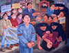

모두가 웃는 웹 'web for all', 웹접근성. 정안인이란, 비시각장애인을 가리키는 정상인이란 단어 대신 부르는 말입니다.
모두가 웃는 웹(web for all)
-
김인순 파출소에서 일어난 강간
작품 정보
- 제작연도
- 1989
- 재료/기법
- 캔버스에 유채
- 작품규격
- 130 X 167.5
- 액자규격
- 147.5 X 185cm
- 부문
- 회화
- 관리번호
- 2000-131
- 전시상태
- 전시중
작가 및 작품설명
* 작품이미지를 무단 복제 또는 상업적으로 활용하실 수 없으며, 무단으로 사용하실 경우 저작권법에 따라 처벌 받으실 수 있습니다.공지사항
-
- 제목
- LOADING
- -
-
일반PC(데스크탑)에서 이용하는 방법
1. 최대한 키보드로 탐색합니다.
2. 텍스트와 텍스트 사이는 'tab'키로 이동할 수 있습니다.
3. Windows의 크롬 브라우저로 접속하셨다면
3-1.Ctrl + Alt + z 를 누릅니다. (크롬 브라우저에서 사이트 접속을 권장합니다.)
4. Mac OS로 접속하셨다면
4-1. 환경설정으로 들어가주세요.
4-2. 손쉬운 사용 메뉴에 보이스오버 기능을 켭니다.
4-3. 음성 안내에 따라 보이스 오버(Voice Over) 사용 연습을 몇 번 반복합니다.
4-4. 다시 사이트로 돌아와 탐색을 시작합니다. 마우스보다는 키보드의 tab키를 눌러 글과 그림 사이를 이동합니다. -
1. 안드로이드 기반 갤럭시 스마트폰에서 접속하셨다면
1-1. 설정메뉴로 들어가주세요.
1-2. 접근성 메뉴에서 스크린 리더 메뉴로 들어가 보이스 어시스턴트(Voice Assistant)기능을 켭니다.
1-3. 음성 안내에 따라 1-7까지 연습을 해봅니다.
*기본 사용 방법 : 한 번 터치 시 텍스트나 그림(대체 텍스트)을 읽어줍니다. 한 번 더 선택하면 링크를 이동하거나 기능을 실행합니다.
2. iOS기반 스마트폰에서 접속하셨다면
2-1. 설정메뉴로 들어가주세요.
2-2. 손쉬운 사용 메뉴에 보이스오버 기능을 켭니다.
2-3. 음성 안내에 따라 보이스 오버(Voice Over) 사용 연습을 몇 번 반복합니다.
2-4. 다시 사이트로 돌아와 탐색을 시작합니다.
*기본 사용 방법 : 한 번 터치 시 텍스트나 그림(대체 텍스트)을 읽어줍니다. 한 번 더 선택하면 링크를 이동하거나 기능을 실행합니다.
오시는길
-
- 서소문본관
- 서울 중구 덕수궁길 61 (서소문동)
-
- 북서울미술관
- 서울 노원구 동일로 1238 (중계동)
-
- 남서울미술관
- 서울 관악구 남부순환로 2076 (남현동)
-
- 난지미술창작스튜디오
- 서울 마포구 하늘공원로 108-1 (상암동)
-
- SeMA창고
- 서울 은평구 통일로 684 (서울혁신파크 5동)
-
- 백남준기념관
- 서울 종로구 종로53길 12-1 (창신동)
-
- SeMA벙커
- 서울 영등포구 여의대로 지하 76 (여의도동)